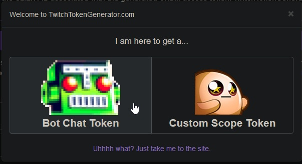
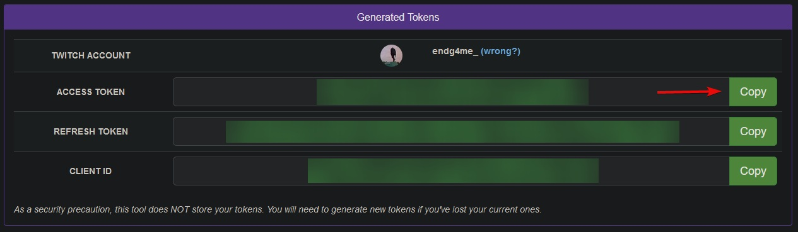

Download: stcrb_v2.0.0.zip
Doesn't open? Perhaps you need to open it with 7-Zip.
Latest changelog:
Create an email, for example, on https://outlook.com/ by Microsoft since it doesn't require a mobile phone.
Using this email, create a new account on Twitch.
While on this account, make sure to follow your main channel.
Then, while still logged in the bot account, go here -> https://twitchtokengenerator.com/.
Here, on the appeared window, click "Bot Chat Token" and login with your bot account.
Then in the section "Generated Tokens" copy the "Access Token".
Now go to config.json inside the bot folder on your PC and paste it in botOauth's value.
Set botUsername to the username of your bot on Twitch, and channelToWatch to the username of your main account on Twitch.
Now, if you launch the bot using bot.exe, it should work correctly.
Pick a scene you want to add the rating on, then in the Sources section click "Add" button.
Create a new Text (GDI+) source.
In the opened properties check the "Read from file" mark and pick a file named avrrating.txt inside the bot folder.
All that's left is designing it, and that's all up to you!
Something broke or need help setting up? Contact me on Discord: endg4me_
Having a great time using the bot? Consider supporting me on Ko-Fi!